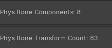
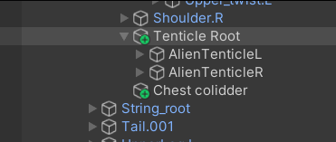
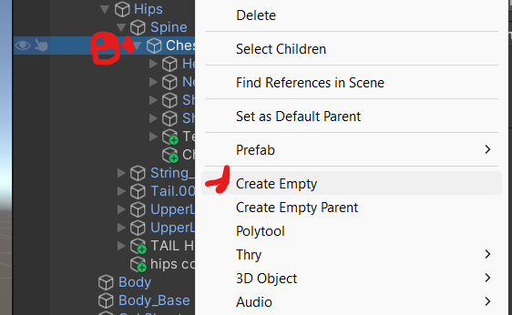
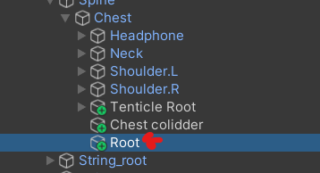
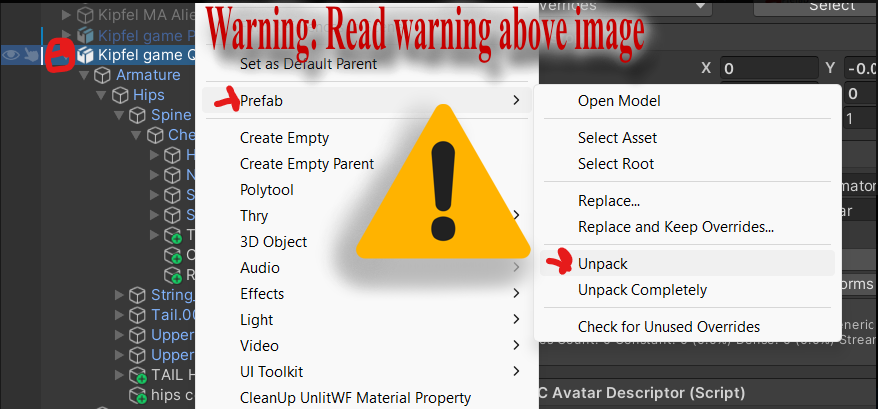
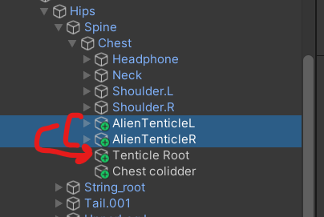
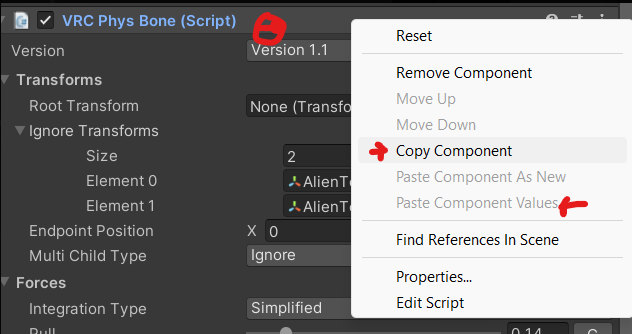

To reduce components, use root bones to combine multiple physbone components with the same settings that also share a parent.

Instead of having a physbone AlienTenticleL and AlienTenticleR, just put one physbone component on Tenticle Root. This will apply the physbone to both child strands of bones.
No root bone? Just make one. Find the parent bone of the bones you want to make a root for, then Right click that bone and create empty.

Name the bone root, or something like that.

Then drag the bone strands you want in the root onto the root bone (you may need to unpack the prefab your avatar for this). **Only unpack the prefab if you will not need to enter blender for this avatar** (If you need to use blender for the avatar, please add a root bone in blender instead, and parent the bones properly there).
**When unpacking the prefab, you will no longer be able to import changes from blender directly**


Add a physbone component to the root bone, and copy the settings of one of the child bones and paste them on root bone.

Then delete the physbone components on the child bones.